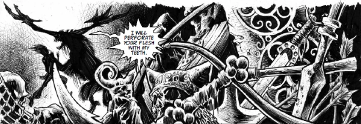

Slough Feg was the first major ongoing antagonist for Slaine and eventually grabbed his own episode in the 2019 Villains Special.
Art by Kyle Hotz
| Story Title | Parts | Pages | w indicates a wraparound coverCovers | Year(s) | Issues | Writer | Artist | Colourist | Letterer |
|---|---|---|---|---|---|---|---|---|---|
From SlaineThe Bride of Crom | 6 | 36 | 341: Massimo Belardinelli 1 | 1983 | 337-342 | Pat Mills | Massimo Belardinelli | [b&w] | Tom Frame |
From SlaineTime Killer | 22 | 121 | 411: Glenn Fabry 420: Glenn Fabry 2 | 1985 | Reprints: M202‑M207411-428, 431-434 | Pat Mills | 1‑2,9‑11,17‑19: Glenn Fabry 3‑8,12‑16,20‑22: David Pugh 19: Bryan Talbot various | [b&w] | 1‑2,4‑14,16‑22: Steve Potter 3,15: Gordon Robson various |
From SlaineThe Horned God: Book I | 10 | 60 | 626: Simon Bisley 632: Simon Bisley 2 | 1989 | 626-635 | Pat Mills | Simon Bisley | <-- | Steve Potter |
From SlaineThe Horned God: Book II | 10 | 60 | 655: Simon Bisley 1 | 1989-1990 | 650-656, 662-664 | Pat Mills | Simon Bisley | <-- | Steve Potter |
From SlaineThe Horned God: Book III | 11 | + 11 credit pages66 | 688 [w]: Simon Bisley 698: Simon Bisley 1w,1 | 1990 | 688-698 | Pat Mills | Simon Bisley | <-- | Steve Potter |
From SlaineBeyond | 1 | 6 | 0 | 1999 | p2000 | Pat Mills | Greg Staples | <-- | Ellie de Ville |
From Slaine | The Book of ScarsPart Five: The Horned God | 1 | 8 | Mike McMahon 1 | 2013 | Reprints: http://goo.gl/dZQosD 1848 | Pat Mills | Simon Bisley | <-- | Ellie de Ville |
From Slaine | The Brutania ChroniclesBook Two: Primordial | 13 | 78 | 1925: Simon Davis 1930: Simon Davis 1934: Simon Davis 3 | 2015 | 1924-1936 | Pat Mills | Simon Davis | <-- | Ellie de Ville |
From Slaine | The Brutania ChroniclesBook Three: Psychopomp | 10 | 60 | 1979, 1985, 1987: Simon Davis 3 | 2016 | 1979-1988 | Pat Mills | Simon Davis | <-- | Ellie de Ville |
Linked to SlaineLord of the Hunt | 1 | 6 | 0 | 2019 | 2KVS | Pat Mills | Kyle Hotz | [b&w] | Ellie de Ville |
| year | episodes | pages |
| 1981 | 0 | 0 |
| 1982 | 0 | 0 |
| 1983 | 6 | 36 |
| 1984 | 0 | 0 |
| 1985 | 22 | 121 |
| 1986 | 0 | 0 |
| 1987 | 0 | 0 |
| 1988 | 0 | 0 |
| 1989 | 17 | 102 |
| 1990 | 14 | 84 |
| 1991 | 0 | 0 |
| 1992 | 0 | 0 |
| 1993 | 0 | 0 |
| 1994 | 0 | 0 |
| 1995 | 0 | 0 |
| 1996 | 0 | 0 |
| 1997 | 0 | 0 |
| 1998 | 0 | 0 |
| 1999 | 1 | 6 |
| 2000 | 0 | 0 |
| 2001 | 0 | 0 |
| 2002 | 0 | 0 |
| 2003 | 0 | 0 |
| 2004 | 0 | 0 |
| 2005 | 0 | 0 |
| 2006 | 0 | 0 |
| 2007 | 0 | 0 |
| 2008 | 0 | 0 |
| 2009 | 0 | 0 |
| 2010 | 0 | 0 |
| 2011 | 0 | 0 |
| 2012 | 0 | 0 |
| 2013 | 1 | 8 |
| 2014 | 0 | 0 |
| 2015 | 13 | 78 |
| 2016 | 10 | 60 |
| 2017 | 0 | 0 |
| 2018 | 0 | 0 |
| 2019 | 1 | 6 |
| 2020 | 0 | 0 |
| 2021 | 0 | 0 |